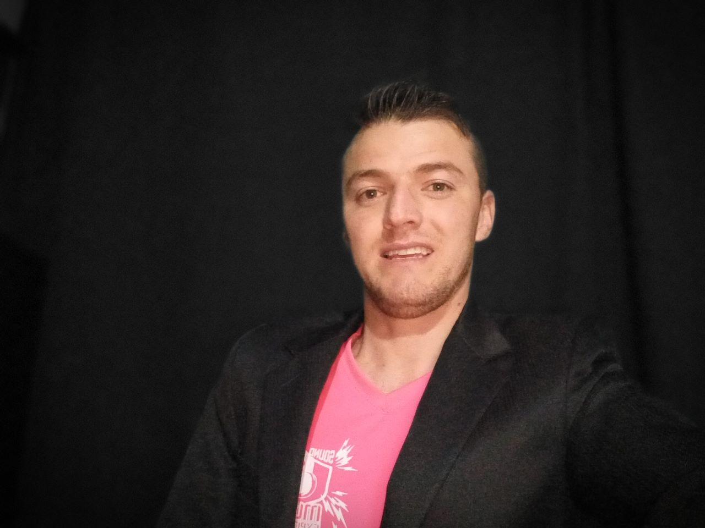

Mi nombre es Yesly Angarita Estudiante de Ingenieria de sistema matriculada en el curso de Diseño web, con altas expectativas en el aprendizaje continuo, y capacidad de aprendizaje autonomo, actualmente resido en el municipio de Madrid Cundinamarca tengo 29 años de edad. mis pasatiempos son el deporte practico actualmente patinaje, me gusta leer ver tv pasar tiempo con mi familia y amiga, son una persona alegre, confiable, me gusta ayudar a consejar, desde joven me ha gustado todo lo que tenga que ver con sistemas, mas que todo aprender a programar a crear es algo que me gustaria parender y enriquecerme mas de ese conocimiento. he aprendido de todo un poco.
William Ricardo Quiceno: tengo 33 años, vivo en Mosquera Cundinamarca, me gusta el deporte, las motos, estoy interesado en aprender el tema de programación para crecer a nivel profesional.

Carlos Dairo Herrán: Estudiante de ingeniería de sistemas de 32 años, me gusta viajar y práctico paracaidismo, me interesan los temas relacionados con cripto análisis e informática forense.